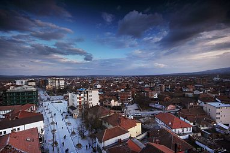
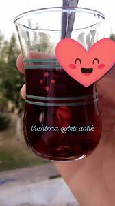
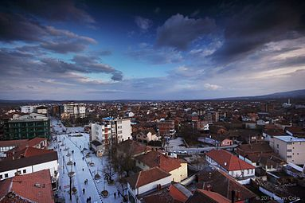
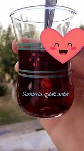
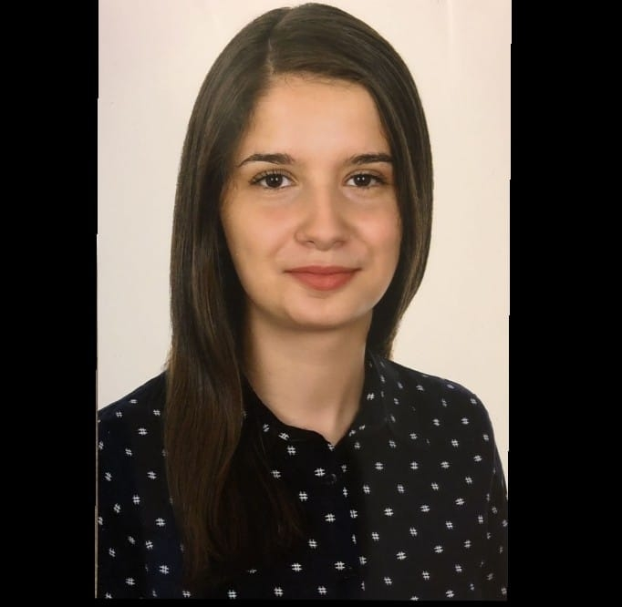

Here are some photos of the Vushtria city!
 



Hello!!! My name is Florina Gjyshinca.I am 19 years old.I lived with my mom,dad and brother.I love to read,and also i love animal(cats)I grew up in a small town Vushtrria.It's not too big a city either.It is an ancient place.Some of the cultural heritage monuments in Vushtrri, which carry architectural values and which constitute the treasure of cultural heritage of Vushtrri but also of Kosovo, are: City Castle, City Hammam, Fountain, Stone Bridge, Bazaar Mosque, Gazi Ali Mosque Beg, Karamanli Mosque, Teqe, various cemeteries, many other residential buildings, as well as complexes of old buildings and shops.My favorite food is Pizza like everyone(maybe),and my favorite drink is absolulty water.I was a student at "Hivzi Sulejmani"-natural science Hight school.I had a great time there.We spent beautiful moments with friends,and now I chose to study Computer Science beacuse its my favorite way to be in the future.And I hope to become a good and succsessful student in this way,and also to make my parents proud with me!
| Emri | Mbiemri | Shkollimi | Mosha | Gjinia |
|---|---|---|---|---|
| Florina | Gjyshinca | Shkenca Kompjuterike | 19 | Femer | 